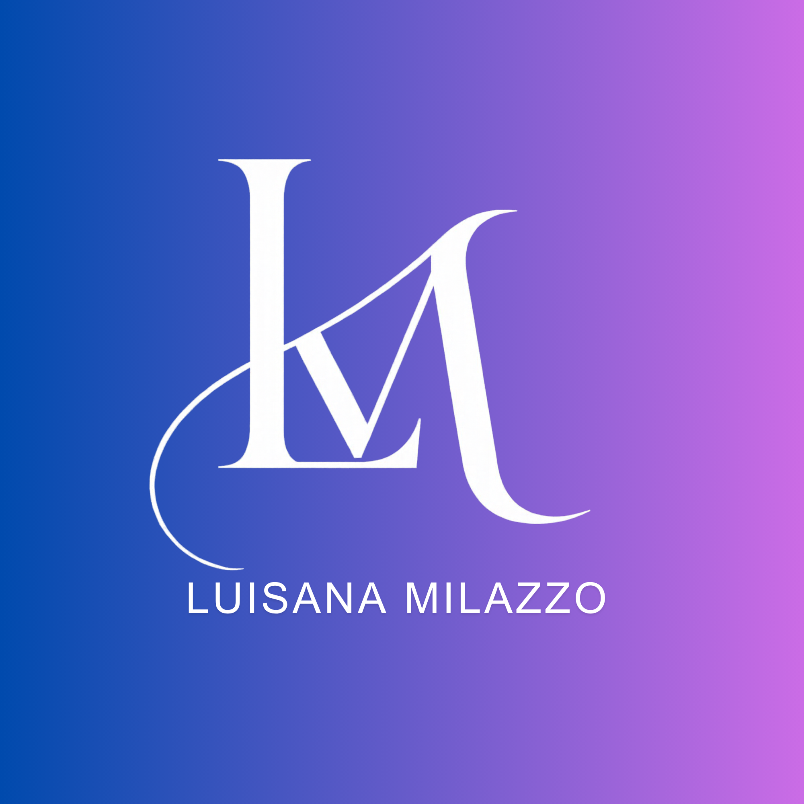

Both ideas start from the same position: about 20 years bridging business and IT, now applied to AI. They share the Industry system (Barlow, blueprint frames) and take their colour from the LM logo: cobalt through iris to orchid and differ in the central metaphor. 1a builds the brand from engineering. 1b builds it from route-finding in the mountains.
A bridge is a structure that carries load between two sides. Luisana's career has done the same between business and IT, and the same span now reaches AI. The brand is drawn like a technical drawing: measured, load-tested, annotated.

Every page connects two things with a measured line: a role and its outcome, a year and the next, Caracas and Hannover. The line is the only ornament the brand needs.
In the mountains you read the terrain, set waypoints and only then start walking. Luisana works the same way: analysis, roadmap, prototype, go-live. Her own route runs from Caracas to Hannover, and the brand uses the language of maps to show it.
Content is laid out as numbered waypoints that climb toward a summit marker. It works for a delivery method, a career timeline (Caracas 2000 → INSEAD 2026) or an agenda slide.
The photos stay in natural colour. Their warm neutrals sit well on the paper ground, so they skip the system's duotone treatment. The cut-out portrait is the one image placed on the logo gradient.